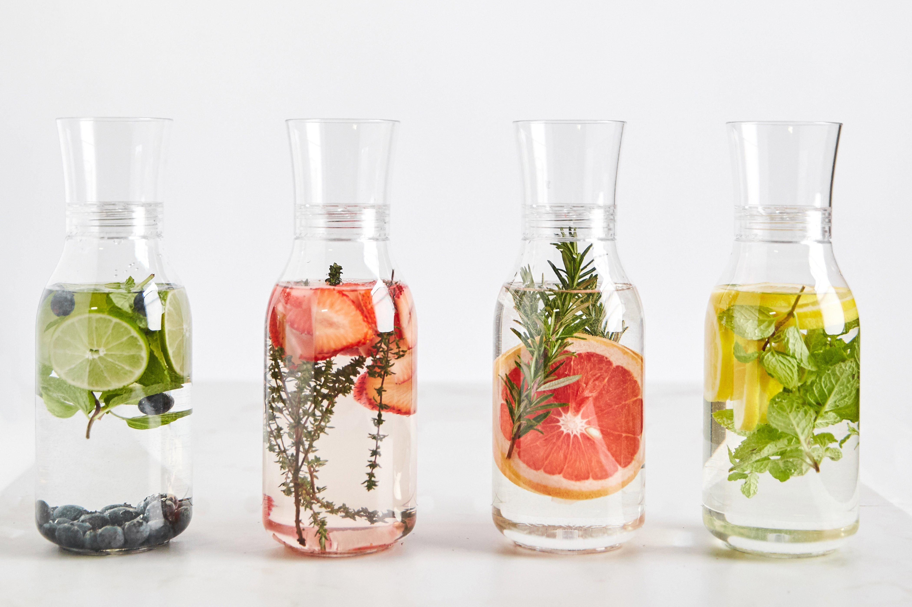

<!DOCTYPE html>
<html lang="en">

<head>
    <meta charset="UTF-8">
    <meta name="viewport" content="width=device-width, initial-scale=1.0">
    <title>Web Food Healthy, Konsultasi, dan Forum Diskusi</title>
    <link rel="stylesheet" href="style.css">
    <link href="https://cdn.jsdelivr.net/npm/bootstrap@5.3.0/dist/css/bootstrap.min.css" rel="stylesheet"
        integrity="sha384-9ndCyUaIbzAi2FUVXJi0CjmCapSmO7SnpJef0486qhLnuZ2cdeRhO02iuK6FUUVM" crossorigin="anonymous">
        <script>
            function validasi(form)
            {
            if(form.email.value == ""){alert("Anda belum megisikan email?");form.email.focus(); return (false);}
            if(form.text.value == ""){alert("Anda belum megisikan komentar?");form.text.focus(); return (false);}
          }
        </script>
</head>

<body>
    <script src="https://cdn.jsdelivr.net/npm/bootstrap@5.3.0/dist/js/bootstrap.bundle.min.js"
        integrity="sha384-geWF76RCwLtnZ8qwWowPQNguL3RmwHVBC9FhGdlKrxdiJJigb/j/68SIy3Te4Bkz"
        crossorigin="anonymous"></script>
</body>

</html>
<!--Header-->

<body class="table-responsive">
    <header>
        <nav class="navbar navbar-expand-lg bg-body-tertiary border-bottom border-2 shadow">
            <div class="container-fluid">
                <a class="navbar-brand" href="index.html">We Can Care</a>
                <button aria-controls="navbarNav" aria-expanded="false" aria-label="Toggle navigation"
                    class="navbar-toggler" data-bs-target="#navbarNav" data-bs-toggle="collapse" type="button">
                    <span class="navbar-toggler-icon"></span>
                </button>
                <div class="collapse navbar-collapse justify-content-end" id="navbarNav">
                    <ul class="navbar-nav fs-6">
                        <ul class="nav justify-content-end">
                            <li class="nav-item">
                                <a class="nav-link active" aria-current="page" href="index.html">Home</a>
                            </li>
                            <li class="nav-item">
                                <a class="nav-link" href="download.html">Download</a>
                            </li>
                            <li class="nav-item dropdown">
                                <a class="nav-link dropdown-toggle" href="#" role="button" data-bs-toggle="dropdown"
                                    aria-expanded="false">
                                    Layanan Kami
                                </a>
                                <ul class="dropdown-menu">
                                    <li><a class="dropdown-item" href="konsultasi.html">Konsultasi</a></li>
                                    <li><a class="dropdown-item" href="asuransi.html">Asuransi</a></li>
                                    <li><a class="dropdown-item" href="produk.html">Produk</a></li>
                                </ul>
                            </li>
                        </ul>
                    </ul>
                </div>
            </div>
        </nav>
    </header>
    <body>
        <div class="container">
            <div class="row ">
                <div class="box">
                    <div class="col-lg-12">
                        <hr>
                        <h2 class="intro-text text-center">Wecancare
                            <strong>Artikel</strong>
                        </h2>
                        <hr>
                    </div>
                    <div class="col-lg-12 text-center">
                        
                    </div>
                    <br>
                    <div>
                        <h2>3 Cara Membuat Infused Water agar Lebih Bergizi
                            <br>
                        </h2>
                        <p><small>October 20, 2019</small></p>
                        <p>Infused water adalah minuman yang terbuat dari air yang diberi rasa dengan memasukkan potongan buah, sayuran, atau rempah-rempah ke dalamnya.
                            Selain memberikan rasa yang segar dan enak, infused water juga dapat menjadi pilihan yang lebih sehat dibandingkan dengan minuman manis atau beralkohol.
                             Dalam artikel ini, kami akan membagikan tiga cara untuk membuat infused water agar lebih bergizi dan memberikan manfaat tambahan bagi kesehatan.<br/><br/>
                            <h6>1. Infused Water dengan Buah-buahan:</h6>
                            Buah-buahan segar adalah bahan utama yang sering digunakan dalam membuat infused water. Potong buah-buahan pilihan Anda menjadi irisan atau potongan kecil,
                             lalu masukkan ke dalam air dingin dalam wadah atau pitcher. Beberapa buah yang cocok untuk infused water antara lain lemon, jeruk, kiwi, stroberi, blueberry, dan semangka.
                              Buah-buahan tersebut tidak hanya memberikan rasa yang segar, tetapi juga mengandung serat, vitamin, mineral, dan antioksidan yang baik untuk kesehatan tubuh. Biarkan infused water tersebut
                               meresap selama beberapa jam di dalam lemari es sebelum disajikan.<br/><br/>
                            <h6>2. Infused Water dengan Sayuran:</h6>
                            Selain buah-buahan, sayuran juga dapat digunakan untuk membuat infused water yang lebih bergizi. Beberapa sayuran yang cocok untuk infused water adalah mentimun, ketimun, jahe, atau daun mint. 
                            Potong atau iris sayuran sesuai dengan preferensi Anda, lalu tambahkan ke dalam air dingin. Misalnya, potongan mentimun dapat memberikan rasa segar dan menghidrasi tubuh dengan baik. Sedangkan jahe atau daun
                             mint dapat memberikan aroma dan rasa yang menyegarkan. Biarkan infused water tersebut meresap selama beberapa jam sebelum diminum.<br/><br/>
                            <h6>3. Infused Water dengan Rempah-rempah:</h6>
                            Rempah-rempah dapat menjadi tambahan yang menarik untuk membuat infused water lebih bergizi. Misalnya, kayu manis, jahe, atau kulit jeruk dapat memberikan aroma dan rasa yang sedap. 
                            Selain itu, rempah-rempah seperti daun mint atau rosemary juga dapat memberikan manfaat tambahan bagi kesehatan. Kayu manis, misalnya, diketahui dapat membantu mengendalikan gula darah.
                             Untuk membuat infused water dengan rempah-rempah, cukup tambahkan potongan atau serutan rempah-rempah tersebut ke dalam air dingin dan biarkan meresap selama beberapa jam sebelum disajikan.<br/><br/>
                            
                            kesimpulan:<br/>Infused water adalah minuman yang menyegarkan dan menyehatkan. Dengan menambahkan buah-buahan, sayuran, atau rempah-rempah ke dalam air dingin,
                            Anda dapat membuat infused water yang lebih bergizi dan memberikan manfaat tambahan bagi kesehatan. Minuman ini tidak hanya memberikan rasa yang enak, tetapi juga menyediakan serat, vitamin, mineral,
                             dan antioksidan penting yang dibutuhkan oleh tubuh. Coba variasikan kombinasi bahan-bahan infused water sesuai dengan selera dan kebutuhan Anda. Selamat menikmati infused water yang segar dan bergizi
                              untuk hidrasi yang sehat sepanjang hari.<br/><br/></p>
                            <hr>
                    </div>
                    <div class="col-lg-12 text-center">
                        
                        <ul>
                            <button type="button" class="btn btn-light" href="artikel5.html">Prev</button>
                            </li>
                        </ul>
                    </div>
                    
                </div>
            </div>
        </div>
    </body>
    <body>
        <form method = POST action="#" onSubmit="return validasi(this)">
            <div class="container">
            <table>
                <tr>
                    <td><p>Email :</p>
                    <input type="Email" name="email" /></td>
                </tr>
                <tr>
                    <td><p>Komentar :</p>
                    <textarea class="form-control" name="text" rows="3" cols="60"></textarea></td>
                </tr>
                <tr>
                    <td><input type="submit" value="kirim"></input></td>
                </tr>
            </table>
        </div>
    </body> 
    
    &nbsp
    <!--footer-->
    <footer style="background-color: rgb(36, 35, 35); color: azure;">
        <div class="container table-responsive">
            <div class="row">
                <div class="col-3 g-3">
                    <h5 class="intro-text text-left"><strong>Menu</strong></h5>
                    <a class="nav-link" href="index.html">Home</a>
                    <a class="nav-link" href="download.html">Download</a>
                    <a class="nav-link" href="konsultasi.html">Konsultasi</a>
                    <a class="nav-link" href="asuransi.html">Asuransi</a>
                    <a class="nav-link" href="produk.html">Produk</a>
                </div>
                <div class="col-9 g-3">
                    <h5 class="intro-text text-left"><strong>Contact Us</strong></h5>
                    <p style="text-align: left;">Phone
                        <a href="https://api.whatsapp.com/send?phone=6288229057561&text=Halo%20Admin%20Saya%20Ingin%20Konsultasi"
                            style="text-align: left; color: azure; ">088229057561</a>
                    <p style="text-align: left;">Fax : 088229057561</p>
                    <p style="text-align: left; ">Email :
                        <a href="mailto:dandaaditianugraha@student.amikom.ac.id"
                            style=" color: azure">wecancareofficial@github.io</a>
                    </p>
                    <p style="text-align: left;">Jl. Ring Road Utara, Ngringin, Condongcatur, Kec. Depok, Kab. Sleman
                        Daerah
                        Istimewa Yogyakarta, 55281</p>
                </div>

            </div>
            <hr>
            <div class="row">
                <div class="col-lg-12 text-center">
                    <p>Copyright &copy; 2023 wecancare.github.io - Web Healthy, Konsultasi, dan Forum Diskusi</p>
                </div>
            </div>
        </div>
    </footer>
</body>